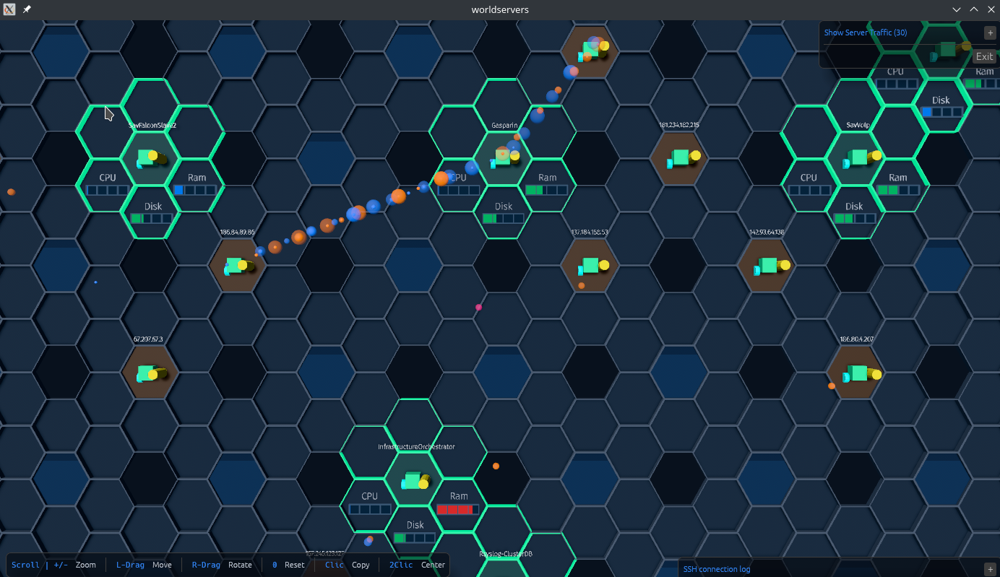

Live metrics
Monitor CPU, memory and disk usage directly on each server node.
WorldServers is a desktop application for monitoring remote Linux servers in real time, combining infrastructure metrics, SSH connectivity and network traffic in an interactive 3D visualization.

Focused on the information needed to understand server health and communication in real time.
Monitor CPU, memory and disk usage directly on each server node.
Visualize inbound, outbound and internal traffic between servers.
Register Linux servers using SSH key or password authentication.
Pan, zoom, rotate and inspect your infrastructure spatially.
From server registration to real-time infrastructure and traffic visualization.
WorldServers connects to your registered machines over SSH, reads operating-system metrics and captures selected network traffic to render the current state of your infrastructure.
WorldServers uses standard Linux tools and SSH access.
tcpdump for network traffic captureiproute2 for interface detectiontop, free and dftcpdumpapt-get update
apt-get install -y tcpdump iproute2 sudo
command -v tcpdump